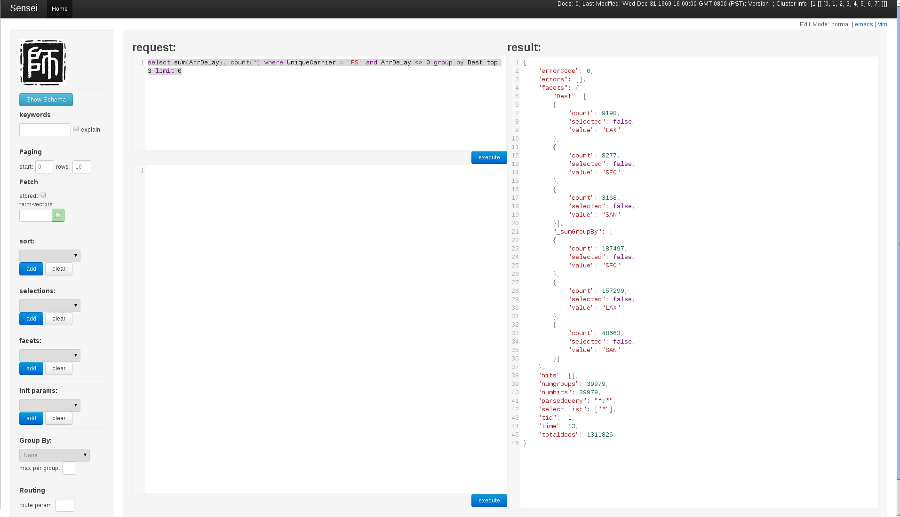

The 1,2,3 of getting rockin' with SenseiBA!
Download a release of SenseiBA at here.
Expand the tar ball: tar -zxf sensei-ba--xxx.tar.tz to your favorite location. We will refer to root directory of your SenseiBA install as $SENSEIBA_HOME.
SenseiBA comes with a few examples to help you getting started. Let's first take a look at the Standalone example, and get that running.
Zookeeper manages Sensei's network topology or cluster.
Start your Zookeeper instance: (You can start your own Zookeeper cluster by following instructions here), From $SENSEIBA_HOME
./bin/zookeeper-server-start.sh \
resources/zookeeper.propertiesYou can shut it down by running:
./bin/zookeeper-server-stop.shWith Zookeeper running, we can start a Sensei node serving SenseiBA node listening on port 8080:
In $SENSEIBA_HOME, start your SenseiBA node by pointing to the Standalone example configuration directory:
./bin/start-sensei-node.sh examples/config-standaloneSenseiBA now monitors the /tmp/ba-index-standalone directory. We can put any csv, json, avro files to that location and Sensei would automatically index data from those files.
Let's download the part of the awesome air dataset available at Data expo:
wget http://stat-computing.org/dataexpo/2009/1987.csv.bz2And unzip it
bunzip2 1987.csv.bz2Now let's copy the 1987.csv to the directory monitored by the SenseiBA
cp 1987.csv /tmp/ba-index-standaloneIt would take approximately 3 minutes for SenseiBA to index the csv file. We can monitor the $SENSEIBA_HOME/logs/sensei-main.log for the entry:
2013/01/02 16:00:10.298 INFO [DirectoryBasedFactoryManager] [] Created the new segment - 1987_csv, in the directory /tmp/ba-index-standalone/exploded/1987_csv, the source is /tmp/ba-index-standalone/1987.csv
2013/01/02 16:00:10.298 INFO [DirectoryBasedFactoryManager] [] the new segment - 1987_csv contains 1311826 elements
Go to http://localhost:8080 . Let's run a query
select sum(ArrDelay), count(*) where UniqueCarrier = 'PS' and ArrDelay <> 0 group by Dest
select avg(ArrDelay) group by Dest,Origin, UniqueCarrier top 10
select distinctCount(UniqueCarrier) SenseiBA can be queried by using either json
http://senseidb.github.com/sensei/client-rest.html or bql api http://senseidb.github.com/sensei/bql.html
Sensei comes with a web-console (written using Sensei's Javascript API) to help you interact with your Sensei cluster.
Simply point your favorite browser to: http://localhost:8080
In $SENSEIBA_HOME, do:
./bin/kill.shSee the following screenshot of the standalone example:

If you think this is cool, move on to the Hadoop Example »